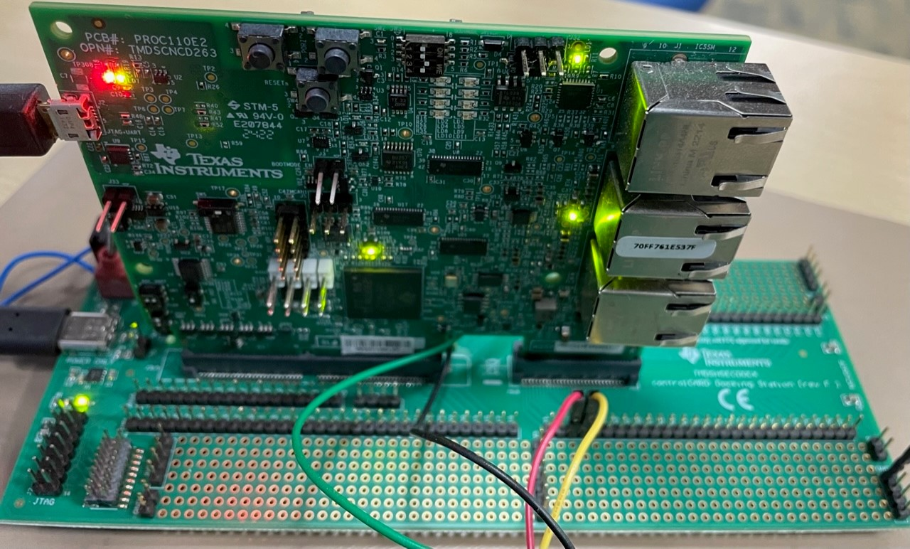
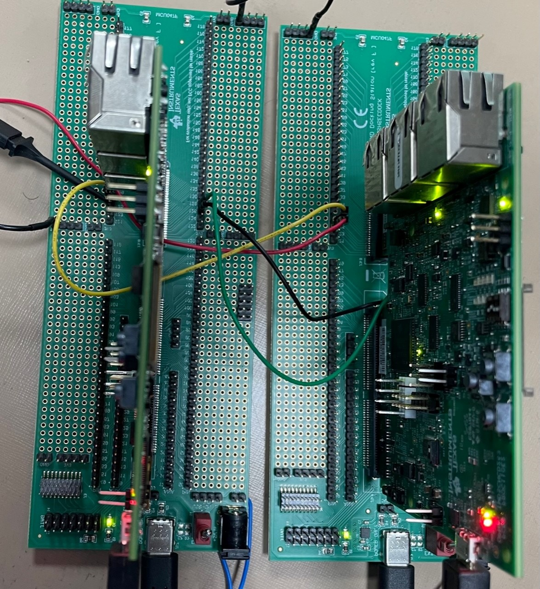
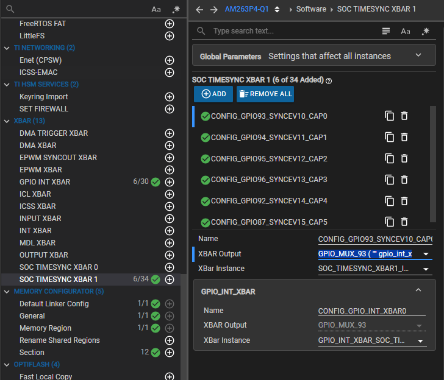

Introduction
The Single Edge Nibble Transmission protocol is a unidirectional communications method that connects the sensor/transmitting device and the controller/receiving device without the use of a coordination signal from the controller/receiving device. It is intended for usage in situations where high-resolution data must be transferred from a sensor to an engine control unit (ECU). It serves as a simpler, less expensive alternative to CAN, LIN, or PSI5 as well as a replacement for lesser resolution techniques such as traditional sensors that provide analog output voltage and PWM. Automotive applications for SENT-compatible sensor devices include applications for pedal sensing, mass airflow sensing, pressure sensing, temperature sensing, humidity sensing, and many others.
The SENT decoder Example is a reference for software based implementation of SAE J2716. PRU ICSS firmware enables SENT decoder interface on TI Sitara AM263x processor.
This example does following: configures pin mux, sets soc mux to enable gpio mode for ICSS, initializes PRU, DMEM and PRU INTC module, downloads crc look up table in PRU Data RAM, and extracts sent decoded signal to UART terminal.
Supported Combinations
| Parameter | Value |
| CPU + OS | r5fss0-0 freertos |
| Toolchain | ti-arm-clang |
| Board | am263x-cc |
| Example folder | examples/pru_io/sent/decoder_pruicss_iep_ecap/example |
| Parameter | Value |
| ICSSM | ICSSM0 - PRU0 |
| Toolchain | pru-cgt |
| Board | am263x-cc |
| Example folder | examples/pru_io/sent/decoder_pruicss_iep_ecap/firmware |
HW Setup

Encoder setup

Decoder setup

Encoder+Decoder Setup
Connect the folowing pins while using PRUICSS IEP ECAP Example
PR0_PRU0_GPIO0 (GPIO93) -> PR0_PRU0_GPIO0 (Pin no. 125)
PR0_PRU0_GPIO1 (GPIO94) -> PR0_PRU0_GPIO1 (Pin no. 126)
PR0_PRU0_GPIO2 (GPIO95) -> PR0_PRU0_GPIO2 (Pin no. 127)
PR0_PRU0_GPIO3 (GPIO96) -> PR0_PRU0_GPIO3 (Pin no. 128)
PR0_PRU0_GPIO4 (GPIO92) -> PR0_PRU0_GPIO4 (Pin no. 124)
PR0_PRU0_GPIO5 (GPIO87) -> PR0_PRU0_GPIO5 (Pin no. 108)
Ground Pin(Any) -> Ground Pin(Any) [To Make sure both boards are having common ground]
Steps to Run the Example
- When using CCS projects to build, import the CCS project from the above mentioned Example folder path for R5F and PRU, After this
main.asm, linker.cmd files gets copied to ccs workspace of PRU project.
- Build the PRU project using the CCS project menu (This step is optional, used when the firmware is modified) (see Using SDK with CCS Projects).
- Build Flow: Once you click on build in PRU project, firmware header file which is generated in release or debug folder of ccs workspace, is moved to
<sdk-install-dir/examples/pru_io/sent/decoder_pruicss_iep_ecap/firmware/device/>.
- Build the R5F project using the CCS project menu (see Using SDK with CCS Projects).
- Firmware header file path is included in R5F project include options by default, Instructions in Firmware header file can be written into PRU IRAM memory using PRUICSS_loadFirmware API call
- Build Flow: Once you click on build in R5F project, SysConfig files are generated, Finally the R5F project will be generated using both the generated SysConfig and PRU project binaries.
- Note: The PRU project won't run independently as it is dependent on SysConfig files generated by the R5F project to intialize pru.
- Note
- Prerequisite: PRU-CGT-2-3 (ti-pru-cgt) should be installed at:
C:/ti/
Sample Output
******************SENT DECODER Application**********************
SENT PRU-ICSS firmware loaded and running
******************CHANNEL0 SENT DATA**********************
Number of Frames received: 9
Channel0 calculated tick period: 538 ns
channel0 StatusComm Data: 08
Channel0: Data0 Data1 Data2 Data3 Data4 Data5 CRC
Value: 07 04 08 07 04 08 03
**********************************************************
******************CHANNEL1 SENT DATA**********************
Number of Frames received: 9
Channel0 calculated tick period: 538 ns
channel0 StatusComm Data: 08
Channel0: Data0 Data1 Data2 Data3 Data4 Data5 CRC
Value: 07 04 08 07 04 08 03
**********************************************************
******************CHANNEL2 SENT DATA**********************
Number of Frames received: 9
Channel0 calculated tick period: 538 ns
channel0 StatusComm Data: 08
Channel0: Data0 Data1 Data2 Data3 Data4 Data5 CRC
Value: 07 04 08 07 04 08 03
**********************************************************
******************CHANNEL3 SENT DATA**********************
Number of Frames received: 9
Channel0 calculated tick period: 538 ns
channel0 StatusComm Data: 08
Channel0: Data0 Data1 Data2 Data3 Data4 Data5 CRC
Value: 07 04 08 07 04 08 03
**********************************************************
******************CHANNEL4 SENT DATA**********************
Number of Frames received: 9
Channel0 calculated tick period: 538 ns
channel0 StatusComm Data: 08
Channel0: Data0 Data1 Data2 Data3 Data4 Data5 CRC
Value: 07 04 08 07 04 08 03
**********************************************************
******************CHANNEL5 SENT DATA**********************
Number of Frames received: 9
Channel0 calculated tick period: 538 ns
channel0 StatusComm Data: 08
Channel0: Data0 Data1 Data2 Data3 Data4 Data5 CRC
Value: 07 04 08 07 04 08 03
**********************************************************
- Note
- See list supported firmware design and list of supported feature : SENT
Steps to modify SENT decoder PRU Firmware
Modifying Tick Period
Modification supported: Change hardcoded tick period in firmware. Current release supports only 1us tick period support in firmware. In order to modify it:
- When using CCS projects to build, Import sent_decoder_using_iep_capture_pru0_fw project from the above mentioned Example folder path.
- In
main.asm file modify ch0_ticktime to desired value(1000 to 3000) and accordingly modify ch0_syncpulse_min_dur = (0.8*ch0_ticktime)*56 and ch0_syncpulse_max_dur = (1.2*ch0_ticktime)*56. For example for 500ns tick period.
- Refer the following section for running the example after altering the firmware Steps to Run the Example
ch0_ticktime .set 500
ch0_syncpulse_min_dur .set 400*56
ch0_syncpulse_max_dur .set 600*56
Modifying the pins used
When implementing the SENT decoder using iep-ecap application on the SOC, proper configuration of the Sysconfig is essential to ensure correct signal routing. This configuration must align with the specific hardware schematic of your AM263PX-based/AM261X-based system.
Required SysConfig Modifications To properly configure these for SENT decoding:
- Open SysConfig file (.syscfg) of the project
- Navigate to the GPIO configuration section
- Configure the GPIO pins according to your hardware schematic
- Navigate to the SOC TIMESYNC XBAR 1 configuration section
- Change the XBAR output according to the pins that are required according to the SOC's schematics

SOC TIMESYNC XBAR 1 settings
 1.8.20
1.8.20